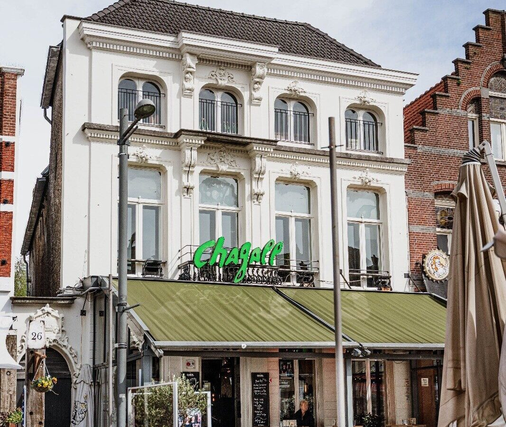
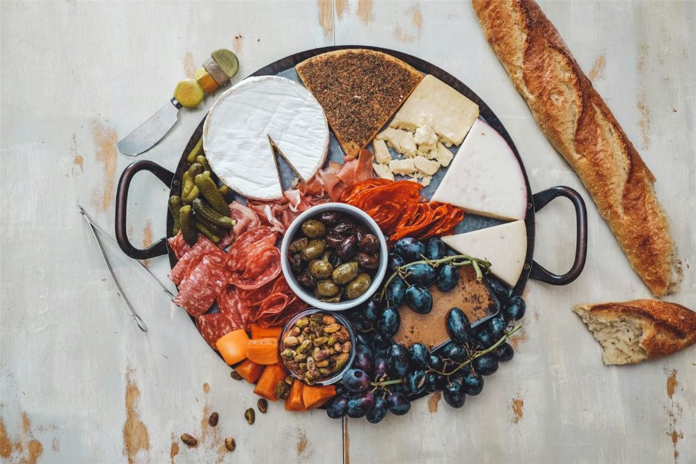

Overdag
Een ontspannen, gastvrije grandcafé-sfeer. Mensen komen samen om te eten, te werken, bij te praten of gewoon even te genieten. Met gevarieerde lunches en een uitgebreide koffiekaart.
Grand Café aan de Markt, Roosendaal
Voor een kop koffie, een lunch met vrienden, een borrel in de avondzon of een avond uit. De deur staat altijd open.

Chagall staat voor warmte, gezelligheid en vrijheid.
Aan de Oude Markt in Roosendaal, waar het stadsleven altijd in beweging is, vind je al sinds 1991 een vertrouwde plek: Grand Café Chagall.
Wat ooit begon als een plek voor een kop koffie en een goed gesprek, groeide uit tot een ontmoetingsplek waar generaties samenkomen. Vaste gasten, nieuwe gezichten, vrienden, families en voorbijgangers: bij Chagall komt iedereen samen.
We zitten in een prachtig karakteristiek pand, met voor de deur het grootste terras van de stad. Ons verwarmde terras biedt ruimte aan ruim 200 gasten, waardoor je het hele jaar door comfortabel kunt genieten.
Iedereen is welkom, en dat voel je meteen wanneer je binnenstapt. Een plek waar herinneringen ontstaan, verhalen worden gedeeld en het leven wordt gevierd.
Een ontspannen, gastvrije grandcafé-sfeer. Mensen komen samen om te eten, te werken, bij te praten of gewoon even te genieten. Met gevarieerde lunches en een uitgebreide koffiekaart.

Diner, borrelplanken en de klassiekers voor een gezellige borrel. We staan bekend om onze uitstekende cocktailkaart, met verrassende creaties en vertrouwde favorieten.

Dan komt Chagall helemaal tot leven. De stoelen en tafels gaan aan de kant, de dansvloer verschijnt en onze dj's zorgen voor een energieke, gezellige sfeer.
Lunch, diner, borrelhapjes, koffie, (speciaal)bieren, wijnen en cocktails. Alle prijzen in euro's.
Broodjes, salades en pannenkoeken.
De dag lekker afsluiten? Dit zijn onze hoofdgerechten.
Lekkere hapjes om te delen, of niet...
Voor een korte pauze of een goed gesprek.
Fris, water en sapjes.
Een groot assortiment (speciaal)bieren. Voor ieder wat wils.
Prijzen per glas en per fles.
Verrassende creaties en vertrouwde favorieten.
Vragen over allergenen of iets anders op de kaart? Vraag het gerust aan ons team.

Elke maand staan er weer verschillende avonden vol gezelligheid, muziek en entertainment op de planning. Van ouderwetse stapavonden tot onze Silent Muziekbingo, en live bands en artiesten die regelmatig bij ons op het podium staan.
Benieuwd wat er bij Chagall te beleven is? Volg ons op Facebook en Instagram en blijf op de hoogte van al onze evenementen.
Wij zoeken barmedewerkers, medewerkers bediening en keukenpersoneel. Kom werken bij het gezelligste team van Roosendaal.
Markt 24
Roosendaal